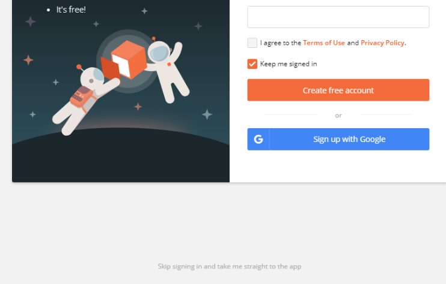
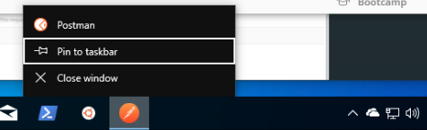
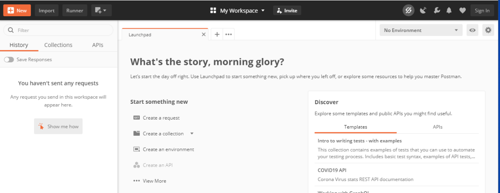
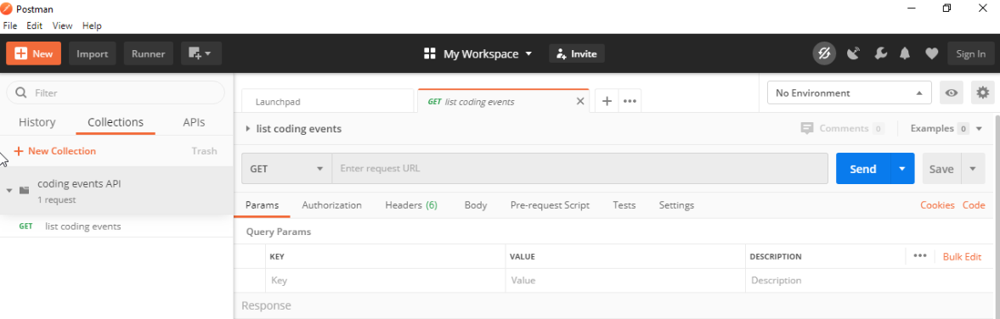

CodingEventsAPI With Postman¶The UI of a browser is designed to make simple GET requests for URLs entered into its address bar. This design works great for browsing sites, but it falls short when working with headless APIs.
Anything beyond a GET request is handled behind the scenes, such as when you POST a form or through AJAX requests with JavaScript. But before you develop the client-side logic for making background requests, you need a way to interact with the API server directly to understand how it works.
When exploring and testing a Web API, it is invaluable to have an interactive environment that allows you to fine-tune requests. For example, you may need to configure the HTTP method, headers or body of the request, all of which the browser does not provide a UI for.
Instead of the browser, we can use tools made specifically for interacting with APIs. One of the most popular API tools in the industry is Postman. It is a cross-platform tool that puts you in full control of configuring and executing API requests.
In this walkthrough we will work with Postman to explore how APIs can be consumed.
Warning
If you have not already installed dotnet and git with PowerShell then you will need to go back to the previous walkthrough before continuing with this one.
Installing Postman is easy thanks to its cross-platform nature. You can download the installer from the Postman downloads page. We will show instructions for setting up on Windows, but because Postman is cross-platform the other instructions in this walkthrough will apply regardless of your platform.
Select the Windows x64 installer download and then run the installer:

After installation Postman should open automatically. Making an account can be useful but if you do not want to create one you can select the Skip link in gray at the bottom of the splash screen:
Tip
Once installed, you can right-click the Postman icon and pin it to your taskbar for easy access in the future:
You can leave the Launchpad view open for now. We will explore Postman after setting up our API server.
CodingEventsAPI Source Code¶Throughout this course we will be using a modified version of the MVC CodingEvents application you worked with previously. The CodingEventsAPI is designed following the OpenAPI REST specification. Although they are implemented differently, you will find that most of the features from the MVC application have been supported through endpoints in the API.
Note
Our focus in this course is on operations, and as such we will not be going into the development of the API. However, feel free to explore the source code if you are curious about the similarities and differences between the .NET MVC and API implementations.
Let’s begin by cloning the repo onto our machine:
Note
If you just opened your PowerShell Terminal then it will default to a CWD of your HOME directory, C:\Users\<username>.
If you want to clone the repo somewhere else make sure to change to that directory first.
> git clone https://github.com/launchcodeeducation/coding-events-api
For today’s studio we will start with the first branch of the API codebase, 1-sqlite. This branch has an API with a single (CodingEvent) resource and a built-in SQLite database.
Let’s change into the repo and switch to this branch:
# cd is an alias (like a nick-name) for the Set-Location cmdlet in PowerShell
> cd coding-events-api
# check out the 1-sqlite branch
> git checkout 1-sqlite
You can leave this PowerShell Terminal window open, we will return to it in a later step:

This branch of the API starts things simple by only exposing a single resource and 4 endpoints for interacting with it.
The shape of the CodingEvent resource describes the general form of its properties and value types:
CodingEvent {
Id: integer
Title: string
Description: string
Date: string (ISO 8601 date format)
}
In our case the CodingEvent shape is just the properties and types (translated to portable JSON types) defined in the CodingEvents Model class.
public class CodingEvent {
public long Id { get; set; }
public string Title { get; set; }
public string Description { get; set; }
public DateTime Date { get; set; }
}
An example CodingEvent JSON response would look like this:
{
"id": 1,
"title": "Consuming the Coding Events API With Postman",
"description": "Learn how to use Postman to interact with the Coding Events API!",
"date": "2020-07-24"
}
Notice how this JSON is just a representation of an instance of the CodingEvent model class.
It has been converted from a C# object representation to a JSON string representation so it can be transported over HTTP. Recall that we perform this conversion, or serialization, so that our API can output data in a portable format that is language-agnostic.
This branch of the API has 4 endpoints that we will now describe in detail. Recall that an endpoint is made up of both a path (to the resource) and a method (action to take on the resource).
They all operate on CodingEvent entities and share a common entry point path of /api/events. Request and response bodies are all in JSON. More specifically they have a Content-Type header value of application/json.
GET Coding Events¶Making a GET request to the entry point of a resource should return a representation of the state of the collection. In our case this representation is a JSON array with CodingEvent elements:
[
CodingEvent { ... },
...
]
If the current state of the collection is empty then we will just get back an empty JSON array:
[]
In more terse terms we can describe this endpoint as:
GET /api/events -> CodingEvent[]
GET Single CodingEvent¶If you want to view the representation of a single entity you need to provide information to uniquely identify it within the collection. Since the entry point represents the collection, it can be followed by an Id value in the path to look inside the collection and return only the corresponding entity.
When describing entity endpoints we use path variable notation, {variableName}, to symbolize where the value needs to be put in the path.
We can describe this CodingEvent entity endpoint in shorthand as:
GET /api/events/{codingEventId} -> CodingEvent
If an entity with the given codingEventId is found we will get a single CodingEvent JSON object back. If it is not found we will receive a response with a 404 status code to indicate the failed lookup.
Think about what it means to create an entity. You need to provide both the required data and the collection it belongs to. When we want to create a CodingEvent we are asking the API to change the state of the collection (the list of entities), so our path must be /api/events.
Recall that the C in CRUD stands for create and corresponds to the POST HTTP method in a RESTful API. Putting the resource and the action together we know we need to POST to the /api/events endpoint.
Finally, as part of our POST request we will need to send a request body containing the data required to create the entity.
The shape of the NewCodingEvent describes the JSON body that the endpoint expects:
NewCodingEvent {
Title: string
Description: string
Date: string (ISO 8601 date format)
}
When making a request you would need to send a JSON body like this to satisfy the general shape:
{
"Title": "Halloween Hackathon!",
"Description": "A gathering of nerdy ghouls to work on GitHub Hacktoberfest contributions",
"Date": "2020-10-31"
}
Note
We only provide the user editable fields, not the unique Id which the API handles internally when saving to the database.
Recall that when a POST request is successful the API should respond with the 201, or Created, HTTP status code. As part of the 2XX HTTP success status codes, it indicates a particular type of successful response with a special header.
The OpenAPI REST spec states that when an entity is created the response should include both this status and the Location header that provides the URL of the new entity:
Location: <server origin>/api/events/<new entity Id>
As an example:
Location: http://localhost:5000/api/events/1
You could then issue a GET request to the Location header value and view the new entity! In shorthand format this endpoint can be described as:
POST /api/events (NewCodingEvent) -> 201, CodingEvent
If the request fails because of a client error then it will respond with a 400 status code and a message about what went wrong. In the case of CodingEvent entities the following validation criteria must be met:
Title: 10-100 charactersDescription: less than 1000 charactersDeleting a CodingEvent resource means to operate on a single entity. This should make sense as it would be too powerful to expose the ability to delete the entire collection. Just like the endpoint for getting a single entity, this endpoint requires a codingEventId path variable.
When a resource is deleted, the OpenAPI spec expects the API to respond with a 204 status code. Similar to the 201 status, this code indicates a success with no response body or special headers.
The deletion endpoint can be described in shorthand as:
DELETE /api/events/{codingEventId} -> 204
If you attempt to delete a resource that doesn’t exist (with an incorrect codingEventId) then the endpoint will respond with an expected 404 status and message.
Two endpoints at the entry point path, /events, to interact with the collection as a whole:
GET /api/events -> CodingEvent[]POST /api/events (NewCodingEvent) -> 201, CodingEventAnd two that require a sub-path variable, /events/{codingEventId}, to interact with a single entity:
DELETE /api/events/{codingEventId} -> 201, CodingEventGET /api/events/{codingEventId} -> CodingEventCodingEventsAPI¶In your PowerShell terminal enter the following commands to run the API from the command-line. We will learn more about the dotnet tool in later lessons:
Note
If you didn’t leave your PowerShell window open make sure to navigate back to the coding-events-api repo directory before issuing the following commands.
We will need to change to the CodingEventsAPI project directory (inside the repo directory) to run the project.
If you cloned the repo into your HOME directory then the absolute path will be:
C:\Users\<username>\coding-events-api\CodingEventsAPI
coding-events-repo directory¶# change to the CodingEventsAPI project directory
> cd CodingEventsAPI
# run the project
> dotnet run
info: Microsoft.Hosting.Lifetime[0]
Now listening on: https://localhost:5001
info: Microsoft.Hosting.Lifetime[0]
Now listening on: http://localhost:5000
info: Microsoft.Hosting.Lifetime[0]
Application started. Press Ctrl+C to shut down.
info: Microsoft.Hosting.Lifetime[0]
Hosting environment: Development
info: Microsoft.Hosting.Lifetime[0]
Content root path: C:\Users\<username>\coding-events-api\CodingEventsAPI
CodingEvents¶Now that our API server is running we can make our first request using Postman. To create a new request select the New button in the top left corner:

With the new item dialog open select the Create New tab (on the left) then select Request.

This will open the new request dialog:
Postman requests require a name and a collection. A collection is just a container to hold related requests. They make it easy to import and export collections of requests for portability across teams. For our first request enter the name list coding events.
At the bottom of the new request dialog you will see that the collections are empty. Select the orange Create Collection button then enter the name coding events API. The new request dialog button will change to say Save to coding events API:

After saving, a new request tab will be created where you can customize its behavior:
Postman exposes an exhaustive set of tools for configuring every aspect of a request. Fortunately, this request is relatively simple.
We want to request the state of the Coding Events collection, in shorthand:
GET /api/events -> CodingEvent[]
In Postman we can make this request by configuring the following settings:
http://localhost:5000/api/eventsGETAccept application/json)Note
Endpoint are described as relative paths with regards to a server’s origin.
An API uses relative paths because its origin is defined by where it is hosted. Whether that is locally on your machine or in the cloud.
For example, our local server origin is http://localhost:5000 which, when combined with the endpoint path, becomes our request URL:
http://localhost:5000/api/events
To the left of the URL bar is a dropdown selector for HTTP methods. It will default to GET but in the following requests you will need to select the appropriate method from this list.
Underneath the URL bar are tabs for other aspects of the request. Select the Headers tab to configure our header. The Accept header lets the API know that we accept responses that are formatted as JSON.
Note
In our context the API only responds with JSON. However, some APIs offer multiple MIME types for their responses. It is a best practice to set this header explicitly to the content type the consuming application expects.
You can set multiple headers in this section. As you begin to type the name and value Postman will autocomplete them for you. After configuration your request should look like this:
To issue the request you can select the blue Send button, or use the ctrl + enter keyboard shortcut.
Below the request configuration you can see the response section has been populated. From here you can see the response body along with the status code (top right) and Headers:

Since this is our first time running the application the database is empty. We expectedly received an empty JSON list [] which corresponds to the empty representation of the CodingEvents collection.
If you select the Headers tab you can see the API satisfied our Accept request header and provided the response in application/json format.
Note
If you get a “Connection Refused” error it means you likely forgot to start the API server or mistyped the URL. Check both of these before attempting the request again.

CodingEvent¶For our next request we will create a Coding Event. Repeat the steps you performed in the previous request:
create coding event.coding events API collection.This request will change the state of the CodingEvents collection by adding a new entity to it. Recall that the shorthand for this request is:
POST /api/events (NewCodingEvent) -> 201, CodingEvent
We will need to set the following request settings:
http://localhost:5000/api/eventsPOSTContent-Type application/json)NewCodingEvent objectAs a best practice, we explicitly define the Content-Type header. This header indicates that our request contains application/json data so that the API knows how to parse the incoming request body.
In addition to the configurations you are now familiar with setting we will need to define the request body. For this task you can select the Body tab that is next to Headers.
The body of the request must be in a raw JSON format. Once selecting this format enter the following JSON body:
{
"Title": "Halloween Hackathon!",
"Description": "A gathering of nerdy ghouls to work on GitHub Hacktoberfest contributions",
"Date": "2020-10-31"
}
Before sending the request check that your configuration matches the following image:

You can see in the response that the API reflected back the representation of the new CodingEvent entity. Notice that a unique id has been assigned to it by the API.
Looking at the status code (201) and headers of the response we can see the API conformed to the OpenAPI spec. The URL value of the Location header
http://localhost:5000/api/events/1
can be used to view the individual CodingEvent entity that was created.
To illustrate the rejection of bad requests let’s send one that violates the NewCodingEvent validation constraints. Send another request with the following JSON body:
{
"Title": "too short",
"Description": "A gathering of nerdy ghouls to work on GitHub Hacktoberfest contributions",
"Date": "2020-10-31"
}
You can see from the response that the API rejected the request due to client error. The response had a bad request status of 400 and the body included information about what needs to be corrected to issue a successful request:

CodingEvent¶For this step we will make a request for the state of a single entity. You can use the URL from the Location header of the previous request to complete this task. Remember to follow the steps you performed before, keeping in mind the shorthand for this request:
GET /api/events/{codingEventId} -> CodingEvent
get a single coding event.coding events API collection.http://localhost:5000/api/events/1.GET.Accept application/json).You should get back the following JSON response body:
{
"id": 1,
"title": "Halloween Hackathon!",
"description": "A gathering of nerdy ghouls to work on GitHub Hacktoberfest contributions",
"date": "2020-10-31"
}
Our REST API allows us to interact with the state of its resources. If we make a request for a resource that doesn’t exist in this state we expect a 404 (not found) response.
Try issuing the request again with a non-existent codingEventId of 100. You should get back the following response:

In this final step we will issue a DELETE request. Before we make the request, let’s re-issue the request to list all CodingEvent entities. Now that we have added an entity we expect the state of the Coding Events resource collection to have changed.
Switch back to the list coding events request tab and re-issue the request. You should get a response of the collection’s list representation containing the new entity!
To delete this entity, and therefore change the state of our resources, we will need to issue the following shorthand request:
DELETE /api/events/{codingEventId} -> 204
Once again, go through the methodical process of setting up the request:
delete a coding event.coding events API collection.http://localhost:5000/api/events/1.DELETE.Notice that for this request we do not need to set any request headers. A DELETE request should send back an empty (no-content) response body with its 204 status code.

As a final confirmation, check the state of the CodingEvents collection and notice that it has returned to its initial state. The representation of this state is shown in the empty list [] response body.
If you complete this walkthrough early and want some additional practice consider the following bonus missions:
Note
We will revisit command-line web requests in later lessons. If you are able to complete this bonus mission you are well ahead of what is expected of you!